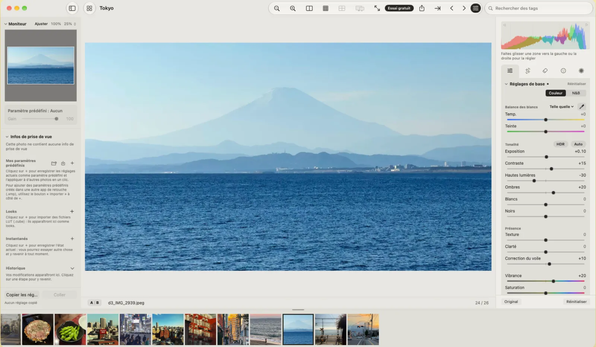

RAW
Les fichiers RAW s’ouvrent avec des couleurs et une luminosité ajustées à l’appareil qui les a pris.

132 profils d’appareils intégrés
Fujifilm, Sony, Canon, Nikon, Hasselblad, DJI et iPhone, chacun ajusté en couleur et en luminosité.
De nouveaux appareils sans mise à jour
Les Réglages vérifient la présence d’un nouveau pack de profils, tout de suite ou chaque semaine, et les nouveaux profils s’appliquent aux photos ouvertes ensuite.
Modes de protection des hautes lumières pris en charge
Les photos prises avec la priorité hautes lumières de Canon ou en DR200/DR400 chez Fujifilm s’ouvrent avec la luminosité vue sur l’appareil.
Tous les formats RAW courants
CR3, CR2, NEF, ARW, RAF, RW2, ORF, DNG, 3FR, IIQ et plus. Sur Mac, si macOS ne lit pas encore un appareil tout récent, Butter Edit retouche le JPEG intégré et vous le signale.
JPEG, HEIC et plus, avec les mêmes outils
JPEG, HEIC/HIF, PNG, TIFF, WebP et AVIF profitent des mêmes curseurs, masques et préréglages que le RAW.
Éditeur RAW rapide par dossier
Téléchargement gratuit, avec 30 jours d’essai gratuit de toutes les fonctions. Nécessite macOS 26 ou version ultérieure. Windows 10 (64 bits) ou version ultérieure.